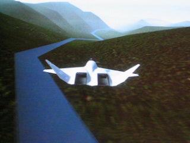
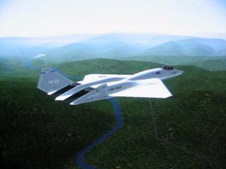

alcatraz-real

alcatraz-fgfs
|
alcatraz-real |
alcatraz-fgfs |
 A380-1 |
 A380-2 |
 A380-3 |
 A380-5 |
 A380-6 |
 A380-7 |
 A380-8 |
 Citation-II-3d-panel |
 alcatraz-flyover |
 alcatraz-pickup |
 3dcockpitview |
 4plane |
 glasscockpit |
 SFO-1 |
 SFO-2 |
 SFO-3 |
|

fgfs-movie2 |
|

fgfs-movie1 |
 terrain1 |
 terrain2 |
 terrain3 |
 terrain4 |
 terrain5 |
 terrain6 |
 An A4 flying northwest out of Minneapolis. |
 Same A4 showing some of the new crop textures. |
 This is kind of neat. Zoom in on the cockpit from an external view and you can see a fully working, live instrument panel through the canopy. This is the same exact instrument panel you see when you are inside the cockpit. No illusions or tricks here, just a fully working 3d animated cockpit visible from inside or out. |
 A Cessna 172 climbing out from KSFO. Note prop disk. |
 Cessna 172 on short final to KSFO 28R. Note instrument panel details and sample runway lights (not yet correctly placed ... runway lights are a work in progress.) |
 Detail of the Cessna 310 U3A panel. |
 OpenGC displays: Making a turn in the YASim 747. |
 OpenGC displays: Lining up an approach to KLAX in the YASim 747. |
 KSFO-Approach1 |
 KSFO-Approach2 |
 KSFO-Approach3 |
 KSFO-Approach4 |
 Overhead shot showing Terminal A, the air cargo area, the end of runway 12R, and the new runway construction. |
 Another overhead shot with a Tucano in the foreground. Mipmapping is turned on which is causing the bluriness in the distance. |
 A DC-3 departing KSJC. Note mipmapping is turned off which preserves much more of the image detail, but also introduces aliasing artifacts. |
 DC-3 shooting an ILS approach to runway 12R. |
 Departing runway 30L (view is from a tail mounted cam.) |
 Continuing the climb out. |
 Turning toward the down-wind leg of the pattern. Looking out the left window. |
 Heading down-wind (looking out the left window.) |
 Abeam the touchdown point. |
 Turning toward the base leg. This image is zoomed in a bit. |
 Final approach to taxiway "Y". Taxiway "Y" is the dark pavement straight ahead. The runway construction to the left is light. Taxiway "N" to the right is also light. Runway 30L even further to the left is dark. Runway 29 way to the left is easy to miss. You can almost see why taxiway "Y" can sucker in the less attentive pilots. |
 Continuing final approach to taxiway "Y". |
 There are no standard runway markings visible on taxiway "Y" which should be a tip off, but by now the pilot is (maybe?) noticing the commercial jet taxiing head on and has bigger problems to deal with. :-) |
 Runway <- 30L - 12R -> |
 On taxiway F, about to intersect with taxiway Y. |
 On taxiway Y, about to intersect with taxiway C. |
 Zoomed in. |
 3panelFlightgear |
 Testing out some hardware ... |
 Flying up a river valley is *much* more exciting with the side views. |
 Approaching Boston, MA at night from the NNE. Note, the thumbnail here does not show much because the subtle point lighting in the full size image does not shrink down well. Go ahead and click, trust me, it will look cool. :-) |
 A satelite view, perched high above Miami, Florida. This is an actual screen shot taken from with the FlightGear program. It shows a variety of land cover and our extremely accurate coast lines. |
 Land of 10,000 lakes (Northern Minnesota, lakes, farmland, and forest) |
 50 miles SW of Las Vegas (desert, mountains, not much vegetation) |
 20 miles north of San Diego looking south back down the coast. |
 TuX patrols Woods Hole harbor (Elizabeth Islands, just north of Martha's Vinyard.) |